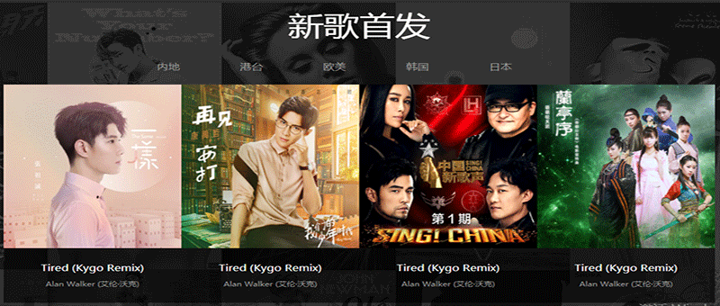
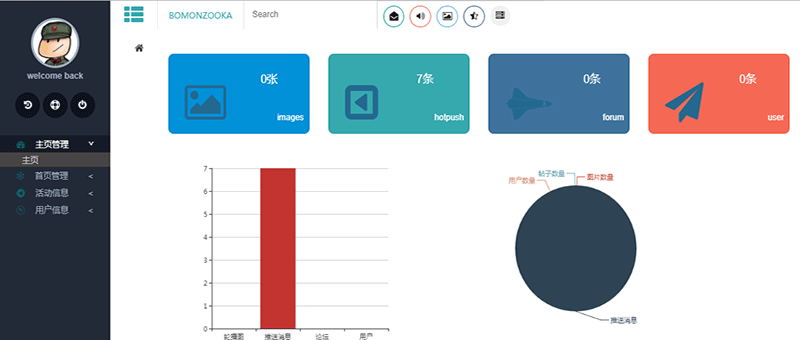

products
css3.0实现的风车效果
New pinewineel 2017-5-6/4:00 PM to 6:00 PM
看着一个页面呈现出风车的效果，心里不由得感叹css3.0的奇妙。编程是一个很神奇的东西，一堆枯燥的代码，通过不同的拼接方式就能呈现神奇的效果。


一个从前到后的整站项目
hack black productor 2017-8-12/17
使用vue2.0、node.js、mongodb、express 完成的整站项目，前台：页面渲染、用户登录注册、发帖、查看个人信息,后台：管理前台显示数据和普通用户信息

移动端单页应用
new vue -elm spa 2017-8-20/24
使用vue-cli 搭建开发环境，配合vue2.0+axios，并使用mock 模拟后台数据，坚实css/js 的基础，归纳总结vue 框架开发的流程，了解移动端布局和SPA 的基本架构。